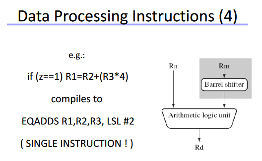

This may sound like a stupid question. My background is in server scripting and some VST cpp, but I never came across as many bitwise operations as in axoloti objects. I can see that there "might" be a performance advantage, but in most environments I would suspect the compiler optimizations to take care of something like that while the code stays better readable with star and slash operators instead of double angle brackets.
Why so much bitwise operation in axoloti objects? Is it a simple question of style or is there more to it?
Why bitwise operation instead of multiply/divide?
tekknovator
#1
lokki
#2
i think it is a mixture of performance and... yes readability.
since most of the code in axoloti firmware and objects uses fixed point math, there are a lot of conversions going on, once you get used to it those conversions are much easier to read with bit shifts then with actual divisions.
a good example would be the midi handling. in the patcher midi is represented as a blue "signal" (27bit i believe), but it comes in as a 7bit value into axoloti. you can look at the code and simply see that it is bit shifted by 20 places to the left when used in the patcher, which is very well understandable.
i remember quite a bit of discussion in the early days of axoloti about bitshifting and using fixed point math as opposed to "standard" multiplication and division and floating point. as i understood it, a couple of things (table read etc.) were much easier with fixed point, and the signal precision is also better, since it is easier to preserve the relevant bits in fixed point. and bitshifting still seems faster then mul/div.
this is at least how i remember things 
tekknovator
#3
This motivates me to look at it in a different way. Thanks a million for the insights @lokki, much appreciated.
Also note that the ARM processor can handle shift & ALU operation in a single clock cycle.
Bit shifts are operated by a "barrel shifter" instead of the Multiplier unit. It's easier for the compiler to determine you want a shift (rather than a multiply or div) by using << or >>.
Even if floats are available on the Axoloti, this makes fixed point very efficient in many cases.

tekknovator
#5
You guys are great. I have a feeling, that there is a lot of opportunity to learn on an axoloti journey. Thanks @SmashedTransistors for the details.